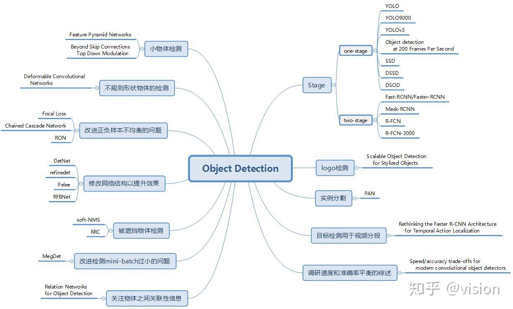
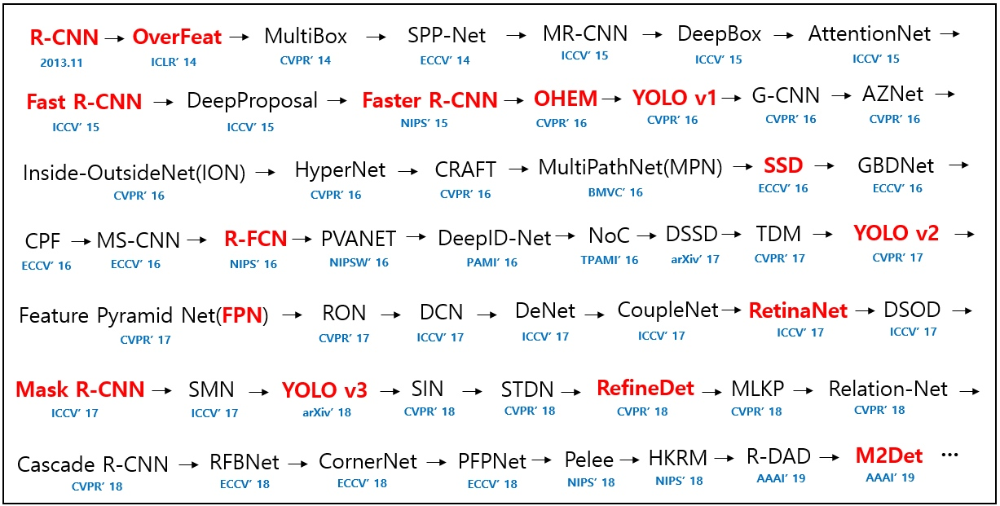

【目标检测】


two stage
1.R-CNN
Region-CNN,基本思路如下:
- 候选提取框：
selective search启发式搜寻可能存在物体的区域 - 对每个提取框提取特征
- 图像分类， 用SVM
- 非极大值抑制
one-stage
- yolo
- SSD
参考
https://zhuanlan.zhihu.com/p/40047760
yolo https://www.cnblogs.com/fydeblog/p/10447875.html
机器之心 https://www.jiqizhixin.com/articles/092301
github综述 https://github.com/hoya012/deep_learning_object_detection
Copyright © 2015 Powered by MWeb, Theme used GitHub CSS.